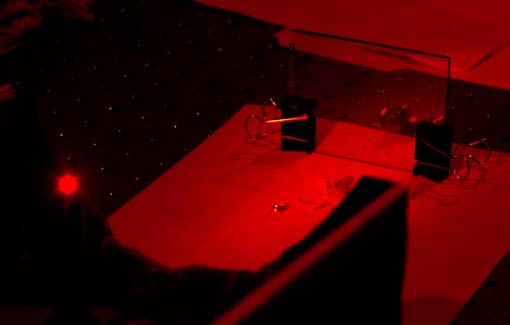

Transmission Hologram SetupThis is a photo of a setup used for making transmission holograms with a helium-neon laser. The film is sandwiched between glass plates as shown, with the objects in front of the plates. The laser beam is spread by a spherical lens of about 3 mm diameter, shown as the red glow at the left of the photo. The object used here consists of a small plastic soldier, a lens and some coins. On the glass plates can be seen part of the interference pattern. The film records the interference pattern between the reference light from the laser and the reflected light from the objects. |
Index |
| HyperPhysics***** Physics 391 ***** Holography | Go Back |